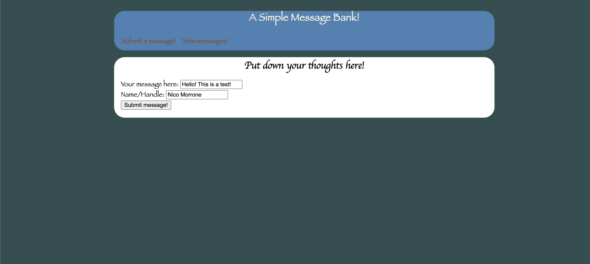

from flask import Flask, render_template, request, g
from flask import redirect, url_for, abort
import sqlite3
app = Flask(__name__)We are going to create a simple message bank using flask! This message bank will let users submit a message with their name, and view other’s messages!
Step 1: Install Packages
We will be using flask to build our webpage. Additionally, we will use sqlite3 to create a database to house the messages. Finally, we will name our app.
Step 2: Create a database function to house the messages
def get_message_db():
"""
Attempts to return the existing message database connection.
If the message database connection (g.message_db) already exists, the function returns it.
If not, it creates a new message database connection and initializes a 'messages' table
with 'handle' and 'message' columns inside the database.
Returns:
g.message_db: The message database.
"""
try:
# attempt to return the existing message database connection from the global context (g)
# checks to see if the message_db exists, if it doesnt't it will create one using the except:
return g.message_db
except:
# creates the database
g.message_db = sqlite3.connect("message_db.sqlite")
# creates a table messages inside the data base with a handle and message column
# IF NOT EXISTS means this command will only be ran if the messages table doesnt exist
cmd = 'CREATE TABLE IF NOT EXISTS messages (handle TEXT, message TEXT)'
# connects to database
cursor = g.message_db.cursor()
cursor.execute(cmd)
return g.message_dbWe are defining the get_message_db function. This function will check to see if a database already exists, and if it doesn’t, we will create one. This is the try and except part. If the databse exists, it will just return the database. If it doesn’t, we will create the databse using sqlite. Addtionally, we will use the command CREATE TABLE IF NOT EXISTS to add a messages table to the database. This table will have a handle column and a message column. The handle will be used for the names of the messengers, and the message column will be for the messages from the users.
Step 3: Create a database function to house the messages
def insert_message(request):
# Extract the message and handle from the request
"""
Inserts a user-submitted message into the 'messages' table of the message database.
parameters:
request: The Flask request object containing form data.
Returns:
message, name: A tuple containing the submitted message and the user's name/handle.
"""
message = request.form.get("message")
name = request.form.get("name")
# gets database
database = get_message_db()
# connects to database
conn = sqlite3.connect('message_db.sqlite')
cursor = conn.cursor()
# inserts the message and handle into the messages table
# creates a function to insert the values into the table
# the ? represents where the paremeters of name, messages will be passed too
insert = """
INSERT INTO messages (handle, message) VALUES (?, ?);
"""
cursor.execute(insert, (name, message))
# commits the changes and close the connection
conn.commit()
conn.close()
# returns the message and name that was submitted
return message, nameThe insert_message function inserts user-submitted messages into the database. It takes the message and name variables from a Flask request, connects to the ‘message_db.sqlite’ database, and uses a cursor to run an INSERT command. The function then commits the changes and closes the database connection. The returned variables contain the the submitted message and user’s name.
Step 4: Create a function to generate random messages from the database
# generates n random mesages
def random_messages(n):
"""
Generates a list of n random messages taken from the 'messages' table in the message database.
parameters:
n: The number of random messages to generate.
Returns:
list: A list of messages, each containing the handle and message of a randomly selected entry.
"""
# connects to the database
conn = sqlite3.connect("message_db.sqlite")
cursor = conn.cursor()
# this gets us the total number of messages from the data base
# this way if n is less than the total number of messages, we won't run into any issues
cursor.execute("SELECT COUNT(*) FROM messages")
total = cursor.fetchone()[0]
# determines the number of messages to retrieve (minimum of n and total_messages)
minimum = min(n, total)
# retrieve n random messages from the database
cursor.execute(f"SELECT handle, message FROM messages ORDER BY RANDOM() LIMIT {minimum}")
finalmessages = cursor.fetchall()
# close the cursor and connection
conn.close()
# returns the gathered messages
return finalmessagesThe random_messages function outputs a list of n random messages from the ‘messages’ table in the database. It determines the total number of available messages and retrieves a minimum of n random entries. The resulting list consists of messages, each containing the handle and message.
Step 5: Create the decorators.
Decorators in are functions that use URLs to output specific things. Using the “@” symbol, decorators specifify what will come after the .com in a URL. Then, it uses a function to run code for when the URL is at the specified point.
# www.google.com/
@app.route("/") # decorators
def render_base():
"""
Renders the main page, 'base.html', which serves as the base template for all other pages on the website.
'base.html' provides the header visible across the entire website.
Returns:
render_template(base.html): The HTML template for the base page.
"""
# renders the main page, base.html, which all other pages are built off of
# base.html gives us the header visible at all times while on the website
return render_template("base.html")# route for the submit page
@app.route("/submit/", methods=['POST', 'GET'])
def submit():
"""
Renders the 'submit.html' template for a URL ending in /submit/.
If the method is 'GET', (a user visit to the URL), the function returns the 'submit.html' template.
If the method is 'POST', (a form submission), the function inserts the submitted message into the database
using the 'insert_message' function. It then renders the 'submit.html' template.
Returns:
render_template(submit.html): The HTML template based on the request method.
"""
if request.method == 'GET':
# if the user just visits the url
return render_template('submit.html')
else:
# inserts message into data base
message, name = insert_message(request)
# render the submit template, thanking the person for their messaage
return render_template("submit.html",message = message, name = name ) @app.route("/view/")
def view():
"""
Renders the 'view.html' template for a URL ending in /view/.
If there are messages present, it shows 5 random messages taken from the 'random_messages' function.
The rendered template includes the retrieved messages.
If no messages are present, it renders an empty 'view.html' template.
Returns:
render_template(view.html): The HTML template for the view page.
"""
try:
# if there are messages present, it will show 5 random messages
msg = random_messages(5)
return render_template("view.html", messages = msg)
except:
# if no messages are present, it will render and empty view page
return render_template("view.html") # route of main page
@app.route("/main/")
def render_main():
"""
Renders the 'main.html' template, the main page of the website.
Returns:
render_template(main.html): The HTML template for the main page.
"""
return render_template("main.html")Step 6: Reviewing submit.html
Submit.html starts from extending from base.html. Base.html serves as a header for submit.html, with links to submit a mssage and view a message. base.html also includes the title of the wbesite.
The block header specifics the color of the text and the font (black and cursive). The header says “Put down your thoughts here!”
The block content is where a user can submit their message. It’s in the form “post”. It first asks for “Your message here” and has an input spot. The input takes in text as a “message”. The next text box is for “Name/Handle”. Under this is another input spot. This input spot also takes in text as a “name”. Then we have another input of tupe “submit”. This is just a submit button labeled with “Submit Message!” That ends the form.
Now we have an if statement. If a name is successfully entered, after submitting their message the user will see a message that says “Thanks (their name here) for the message! To submit another message, hit”Submit a message” above!
If there is an error, it will output a text saying “Please resubmit”.
The final endblock ends our html code
Step 7: Example Screenshots

The above image is an example of a user submitting a message.
The above image is what the user sees after submitting a message.
The above image is what the user sees when viewing messages
Step 8: Link to github respository
https://github.com/nicosm77/HW-3—Message-Page